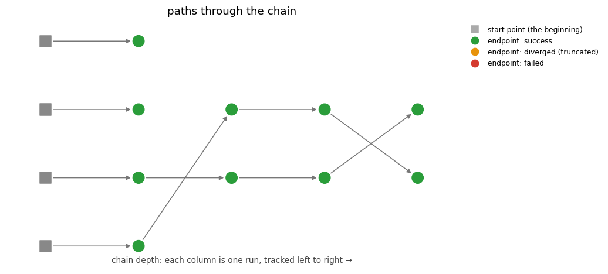

Chained homotopies: provenance all the way back¶
A chain is a sequence of solves where each solve’s start points are the previous solve’s solutions — the workhorse pattern of parameter continuation. Because every solve records where each of its paths started (see Automatic record keeping), a chain is more than its final answers: it is a directed graph of points, and any final solution can be walked back through every intermediate run to the very first start point.
This tutorial builds a small chain from the family \(\{x^2 - a^2,\; xy - 1\}\)
for growing \(a\), and then reads its own records back with the navigation tools.
The family is deliberately not all sunshine: each member has just two finite roots
(\((\pm a, \pm 1/a)\)) but total degree four, so the first solve tracks four paths
and two of them have nowhere finite to go — they head to infinity. Each is an
answer, not a failure: it either converges to an infinite endpoint or is truncated
near infinity (diverged); either way it is recorded, and only the finite solutions
are carried forward, so those lineages simply end. The complete script is
chained_homotopies.py:
#!/usr/bin/env python3
"""Chained homotopies with full provenance: the records follow every hop.
A *chain* is a sequence of solves where each solve's start points are the previous
solve's solutions -- the workhorse pattern of parameter continuation. With the
structured output directory attached (which ``bertini.solve`` does by default), the
chain is *recorded*: every tracked path remembers which point it started from, so any
final solution can be walked back through every intermediate run to the very first
start point.
This script builds a small chain, then reads its own records back with the navigation
tools -- the runs and tracks as pandas DataFrames, the provenance as a networkx graph,
and the whole chain drawn left to right::
python chained_homotopies.py # writes ./bertini_output
python chained_homotopies.py --plot chain.png # also draw the progression
The family here is deliberately tiny but NOT all sunshine: its first solve has four
paths of which only two have a finite root to reach -- the other two head to infinity.
Each such path is an ANSWER, not a failure: it either converges to an infinite endpoint
or is truncated near infinity (`diverged`); either way it is recorded, and only the
finite solutions are carried forward. So the picture shows lineages that end at the
first column and lineages that survive the whole chain. Rerunning the script is
(nearly) instant: every solve is ensure-answered, so recorded paths recall instead of
recomputing.
"""
import argparse
import bertini as pb
from bertini import Variable, VariableGroup, System
from bertini.nag_algorithm import blend_homotopy
X, Y = Variable('x'), Variable('y')
def family_member(a):
"""The member {x^2 - a^2, x*y - 1}: two finite roots (+-a, +-1/a) -- but a total
degree of 4, so a fresh solve tracks four paths and two of them have nowhere
finite to go."""
sys = System()
sys.add_variable_group(VariableGroup([X, Y]))
sys.add_function(X**2 - a**2)
sys.add_function(X * Y - 1)
return sys
def main():
parser = argparse.ArgumentParser(description=__doc__)
parser.add_argument('--plot', metavar='STEM', default=None,
help='draw the left-to-right chain progression to STEM.png and '
'STEM.svg (any suffix on STEM is replaced)')
args = parser.parse_args()
# ---- build the chain -----------------------------------------------------------
members = [family_member(a) for a in (1, 2, 3, 4)]
# the root: an ordinary solve (total-degree start; provenance bottoms out at
# canonical start labels). Four paths -- and only two finite roots, so two paths
# head to infinity (each an answer: an infinite endpoint, or truncated as diverged).
results = [pb.solve(members[0], seed=42)]
# each further member: continue the previous solutions through a blend homotopy.
# Only the FINITE solutions are carried forward -- the at-infinity lineages simply
# end, which is exactly what the picture shows.
for previous, target in zip(members, members[1:]):
homotopy = blend_homotopy(target, previous)
results.append(pb.solve(target, homotopy=homotopy, start=results[-1], seed=42))
# margin notes and deliverables travel with the records
final = results[-1]
pb.annotate(final.solutions[0], 'note', 'the branch through x = +1')
pb.save('the chained family', final,
description='solutions of the last member, chained from the first')
# ---- read the records back: the navigation tools --------------------------------
print('the runs, one row each:\n')
print(pb.runs()[['run', 'when', 'num_paths', 'seed']].to_string(index=False))
print('\nthe tracked paths (statuses and where each one started):\n')
tracks = pb.tracks()
print(tracks[['run', 'index', 'status', 'outcome', 'start_kind']].to_string(index=False))
# every tracked path is an ANSWER -- a finite root, an infinite endpoint, or a
# truncation near infinity -- never a failure; the finite ones are what chain onward
assert (tracks['status'] == 'failed').sum() == 0
assert len(tracks) == 4 + 2 + 2 + 2 # total-degree root, then three chained hops
# the provenance graph: every path an edge from its start to its endpoint
graph = pb.provenance_graph()
print('\nprovenance graph: %d points, %d edges'
% (graph.number_of_nodes(), graph.number_of_edges()))
# the walk itself: one final solution, back to the very beginning
trail = pb.provenance(final.solutions[0])
print('\nprovenance of one final solution (newest hop first):')
for hop in trail:
print(' ', hop)
assert trail[-1]['kind'] in ('start_label', 'given_ref')
# ---- the picture: paths flowing left to right through the chain -----------------
if args.plot:
import matplotlib
matplotlib.use('Agg')
from pathlib import Path
ax = pb.plot_chain()
stem = Path(args.plot).with_suffix('') # tutorial images ship as png AND svg
for suffix in ('.png', '.svg'):
ax.figure.savefig(stem.with_suffix(suffix), dpi=110, bbox_inches='tight')
print('\nchain progression drawn to %s.png / .svg' % stem)
print('\nrecords at:', pb.records_dir(), '-- history/ has the story, results/ the points.')
if __name__ == '__main__':
main()
Chaining is two keyword arguments¶
The root of a chain is an ordinary solve. Every further link passes the homotopy you built and where its paths start:
results.append(pb.solve(target, homotopy=blend_homotopy(target, previous),
start=results[-1], seed=42))
start= accepts a prior SolveResult (or its solutions) —
those points carry provenance, so the new run’s records link back to them with
point_ref references. Raw arrays work too: they are archived as a given, and
provenance bottoms out honestly at data you supplied. To chain from a run recorded in
another session — or by the command-line bertini2 — read its endpoints cold with
bertini.solutions_of(); they come back as points with provenance, ready to chain.
Reading the chain back¶
The navigation tools read the plain records — any directory, any producer, no solver objects:
bertini.runs()— onepandas.DataFramerow per run: when, how many paths, which seed, which software wrote it.bertini.tracks()— one row per tracked path: its verdict (success/diverged/failed), and where it started. Endpoint coordinates stay out of the table unless you passcoordinates=True— on a million-path audit you want the statuses, not the bytes.bertini.provenance_graph()— the points as anetworkx.DiGraph, one edge per path, pointing from where it started to where it ended. Time flows along the edges.bertini.provenance()— the walk for a single point: its chain of{'run', 'index'}hops, ending at a start label or a given.
The picture¶
bertini.plot_chain() draws the chain left to right — each run a column,
paths flowing rightward from their origins (squares) through every run, colored by
verdict (green success, orange diverged, red failed):

Read it like a family tree. Four total-degree start points enter the first run; two
of them go to infinity (converging to an infinite endpoint, or truncated as
diverged — either way an answer, and shown coloured by that verdict). They have
no outgoing edges — an infinite or diverged point is an endpoint of knowledge, not a
start for more tracking — and only the two finite lineages are carried forward, run
after run, to the final member. solve(start=...) does that filtering for you: it chains a result’s
finite solutions. The same discipline applies to points you would rather not
continue for other reasons (a singular endpoint, say, spotted by its
cycle_num/condition number in bertini.tracks() or is_singular in the
solver’s metadata): what you pass as start= is what gets carried, and the graph
records exactly what you chose.
Large solves are a design constraint, not an afterthought: a run with more than
max_paths_drawn paths (default 200) is not drawn path-by-path — the figure
automatically aggregates to one node per run, with edge widths showing how many paths
flow between runs, so a million-path chain renders instead of crashing your session.
The same instinct applies to provenance_graph(): pass runs= to
restrict a big directory to the chains you care about before building a graph out of
it.
Regenerating the figure¶
The images above (.png and .svg, both committed) regenerate through the
standard artifact refresher, from the repository root:
python tools/refresh_doc_artifacts.py --plots --only chained_homotopies